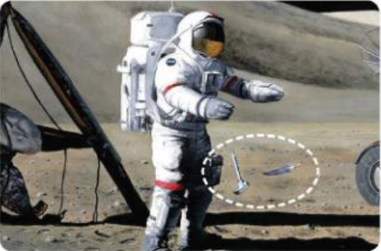
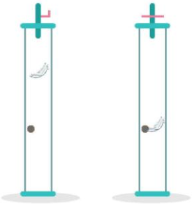
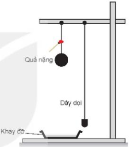
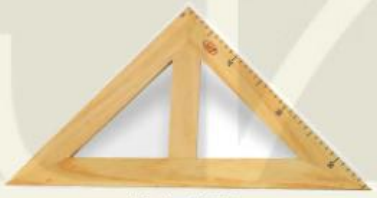

? Kiểm tra bài cũ
Viết công thức vận tốc và quãng đường đi của chuyển động thẳng biến đổi đều. Trường hợp vận tốc đầu bằng 0?
Chuyển động thẳng biến đổi đều có:
Trường hợp vận tốc đầu bằng 0 ($v_0 = 0$):
Bài 10: SỰ RƠI TỰ DO
Sự rơi của các vật trong không khí và trong chân không
Năm 1971, nhà du hành vũ trụ người Mỹ David Scott đã đồng thời thả rơi trên Mặt Trăng một chiếc lông chim và một chiếc búa ở cùng một độ cao và nhận thấy cả hai đều rơi xuống như nhau. Em có suy nghĩ gì về hiện tượng này?

Hình 10.0. Nhà du hành David Scott thực hiện thí nghiệm thả lông chim và búa trên Mặt Trăng (1971).
Gợi ý: Trên Mặt Trăng không có không khí nên không có lực cản. Vì vậy, mọi vật đều rơi với cùng một gia tốc, bất kể khối lượng khác nhau. Đây chính là minh chứng cho sự rơi tự do.
I. Sự rơi trong không khí
Trong không khí, ai cũng thấy hòn đá rơi nhanh hơn lá cây, viên phấn rơi nhanh hơn chiếc lông chim. Nhiều người dự đoán rằng, rơi nhanh hay chậm là do vật nặng hay nhẹ. Em có đồng ý với dự đoán đó không? Các thí nghiệm sau sẽ giúp kiểm tra dự đoán.
1. Thí nghiệm
- TN 1: Thả rơi một viên bi và một chiếc lá.
- TN 2: Thả hai tờ giấy giống nhau, nhưng một tờ được vo tròn, một tờ để nguyên.
- TN 3: Thả rơi hai viên bi có cùng kích thước, một bằng sắt và một bằng thuỷ tinh.
2. Nhận xét
Từ các thí nghiệm trên, ta thấy:
- Không thể dựa vào khối lượng để kết luận vật nào rơi nhanh hơn (TN 1 và TN 3).
- Hai tờ giấy giống nhau, nặng như nhau nhưng tờ vo tròn rơi nhanh hơn tờ để nguyên (TN 2).
- Nguyên nhân làm cho các vật rơi nhanh chậm khác nhau trong không khí là lực cản của không khí. Lực cản càng nhỏ so với trọng lực tác dụng lên vật thì vật rơi càng nhanh và ngược lại.
Câu hỏi: Theo em, nếu loại bỏ được sức cản của không khí, các vật sẽ rơi như thế nào?
3. Thí nghiệm ống hút chân không
Câu hỏi trên đã được nhà bác học Newton trả lời bằng kết quả thí nghiệm với các ống hút chân không (Hình 10.1). Trong ống, hai vật rơi là viên bi chì và chiếc lông chim. Kết quả cho thấy trong chân không, mọi vật rơi nhanh như nhau.

Hình 10.1. Thí nghiệm về sự rơi tự do (a) trong ống có không khí, (b) trong ống không có không khí.
Video minh hoạ: Cơ quan Hàng không và Vũ trụ Hoa Kỳ (NASA) đã thực hiện thí nghiệm thả đồng thời một chiếc lông chim và một quả bóng bowling trong buồng chân không. Kết quả là cả hai vật chạm đáy cùng một lúc — một minh chứng trực quan cho kết luận của Newton.

II. Sự rơi tự do
1. Định nghĩa
Sự rơi tự do là sự rơi chỉ dưới tác dụng của trọng lực.
Nếu vật rơi trong không khí mà độ lớn của lực cản không khí không đáng kể so với trọng lượng của vật thì cũng được coi là rơi tự do.
2. Đặc điểm của chuyển động rơi tự do
a) Phương và chiều
Vì trọng lực có phương thẳng đứng, chiều từ trên xuống, nên sự rơi tự do có phương thẳng đứng (phương của dây dọi) và chiều từ trên xuống dưới.
Ta có thể kiểm tra bằng thí nghiệm với quả nặng và dây dọi (Hình 10.2).

Hình 10.2. Thí nghiệm kiểm tra phương, chiều của sự rơi tự do.
Dựa vào đặc điểm phương thẳng đứng, ta có thể kiểm tra bề mặt tường, sàn nhà có phẳng và thẳng đứng hay không bằng êke tam giác vuông cân (Hình 10.3) và dây dọi.

Hình 10.3. Êke tam giác vuông cân dùng để kiểm tra phương thẳng đứng và phương nằm ngang.
b) Tính chất của chuyển động rơi tự do
Quan sát cho thấy sự rơi tự do là chuyển động thẳng nhanh dần. Để kiểm tra xem có phải là nhanh dần đều hay không, người ta dùng phương pháp chụp ảnh hoạt nghiệm (chụp liên tiếp vật chuyển động sau những khoảng thời gian bằng nhau).
Bảng 10.1 ghi kết quả chụp ảnh hoạt nghiệm về sự rơi của một hòn bi thép sau những khoảng thời gian 0,1 s.
| Thời gian rơi \(t\) (s) | Quãng đường rơi \(s\) (m) |
|---|---|
| 0,1 | 0,049 |
| 0,2 | 0,197 |
| 0,3 | 0,441 |
| 0,4 | 0,785 |
| 0,5 | 1,227 |
Từ bảng số liệu, ta thấy quãng đường \(s\) tỉ lệ với bình phương thời gian \(t\) (\(s \sim t^2\)). Điều này chứng tỏ chuyển động rơi tự do là chuyển động thẳng nhanh dần đều.
Gia tốc của chuyển động rơi tự do được tính từ công thức \(s = \frac{1}{2}gt^2\). Lấy trung bình các giá trị, ta được \(g \approx 9,8\ \mathrm{m/s^2}\) (tại một số nơi, có thể lấy \(g \approx 10\ \mathrm{m/s^2}\)).
Trắc nghiệm nhanh: Trong các chuyển động sau, chuyển động nào được coi là rơi tự do? Tại sao?
A. Chiếc lá đang rơi. B. Hạt bụi chuyển động trong không khí. C. Quả tạ rơi trong không khí. D. Vận động viên đang nhảy dù.
Trả lời: Chỉ có C (quả tạ rơi trong không khí) là gần đúng với rơi tự do, vì lực cản không khí tác dụng lên quả tạ không đáng kể so với trọng lượng của nó. Các trường hợp còn lại đều chịu lực cản đáng kể.
3. Công thức của chuyển động rơi tự do
Chọn thời điểm ban đầu \(t_0 = 0\) (lúc thả vật). Độ dịch chuyển và quãng đường đi được có độ lớn bằng nhau:
Vận tốc tức thời tại thời điểm \(t\):
Liên hệ giữa vận tốc và quãng đường đi được:
✎ Bài tập vận dụng
Bài tập (SGK): Một người thả một hòn bi từ trên cao xuống đất và đo được thời gian rơi là \(3,1\ \mathrm{s}\). Bỏ qua sức cản không khí. Lấy \(g = 9,8\ \mathrm{m/s^2}\).
a) Tính độ cao của nơi thả hòn bi so với mặt đất và vận tốc lúc chạm đất.
b) Tính quãng đường rơi được trong \(0,5\ \mathrm{s}\) cuối trước khi chạm đất.
a) Độ cao nơi thả:
Vận tốc lúc chạm đất:
b) Quãng đường rơi trong \(3,1\ \mathrm{s}\): \(s_{3,1} \approx 47,1\ \mathrm{m}\).
Quãng đường rơi trong \(3,1 - 0,5 = 2,6\ \mathrm{s}\) đầu:
Quãng đường rơi trong \(0,5\ \mathrm{s}\) cuối:
Vậy quãng đường rơi trong 0,5 s cuối là khoảng \(14,0\ \mathrm{m}\).
☆ Tổng kết
- Chuyển động rơi chỉ chịu tác dụng của trọng lực gọi là rơi tự do.
- Chuyển động rơi tự do là chuyển động thẳng nhanh dần đều theo phương thẳng đứng, chiều từ trên xuống.
- Tại một nơi nhất định trên Trái Đất và ở gần mặt đất, mọi vật đều rơi tự do với cùng một gia tốc \(g\). Gia tốc rơi tự do ở các nơi khác nhau trên Trái Đất thì khác nhau.
- Các công thức của sự rơi tự do (với \(v_0 = 0\)):
Vận tốc: \(v = gt\)Quãng đường: \(s = \frac{1}{2}gt^2 = \frac{v^2}{2g}\)Liên hệ: \(v^2 = 2gs\)
- Gia tốc rơi tự do \(g \approx 9,8\ \mathrm{m/s^2}\) (thường lấy \(g \approx 10\ \mathrm{m/s^2}\) trong bài tập).
▤ Bài tập về nhà
- Học thuộc định nghĩa sự rơi tự do và các đặc điểm của chuyển động rơi tự do.
- Làm các bài tập 1, 2, 3 trong sách giáo khoa và sách bài tập.
- Bài tập nâng cao: Một vật rơi tự do từ độ cao \(h\). Biết rằng trong giây cuối cùng vật rơi được \(25\ \mathrm{m}\). Lấy \(g = 10\ \mathrm{m/s^2}\). Tính độ cao \(h\) và thời gian rơi của vật.
Gọi \(t\) là thời gian rơi của vật. Quãng đường vật rơi trong giây cuối cùng là:
$$\Delta s = \frac{1}{2}gt^2 - \frac{1}{2}g(t-1)^2 = \frac{g}{2}(2t-1)$$Thay \(\Delta s = 25\ \mathrm{m}\) và \(g = 10\ \mathrm{m/s^2}\):
$$25 = 5(2t-1) \;\Rightarrow\; 2t-1 = 5 \;\Rightarrow\; t = 3\ \mathrm{s}$$Độ cao rơi:
$$h = \frac{1}{2} \cdot 10 \cdot 3^2 = 45\ \mathrm{m}$$Vậy vật rơi từ độ cao 45 m trong thời gian 3 s.